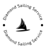

What Is Sailing?
A sailing day is a chance to move with the wind, read the sea and discover the coast from a different perspective.
Explore the experience ↗
DIAMONDSAILING SERVICEDIAMOND SAILING SERVICE · DUBROVNIK
Leave the harbour behind. Find your own horizon, your own swim, your own unforgettable day at sea.
Contact Dragan for availability and your personal direct-booking offer.
Make a direct reservation ↗From Dubrovnik, we set a slower course through the Elaphiti Islands — where clear water, quiet coves and warm wind turn a simple boat trip into a story you keep telling.
Whether you want a private yacht day for your family or an easy-going group adventure with new people, every route is shaped by the sea, the weather and the way you want to spend your time.
Read the experience blog ↗Simple answers for first-time sailors, curious guests and anyone who wants to feel more at ease on the Adriatic.
A sailing day is a chance to move with the wind, read the sea and discover the coast from a different perspective.
Explore the experience ↗You do not need sailing experience. Begin with a calm introduction, simple instructions and time to settle into the rhythm of the boat.
Choose your day ↗Feeling unsure is normal. Tell the skipper before departure so your day can begin gently, with clear guidance and room to feel comfortable.
Talk to Dragan ↗Wear comfortable layers, protect yourself from the sun, keep one hand free when moving and follow the skipper’s guidance.
Plan your day ↗Learn the basics of life on board while seeing Dubrovnik, quiet coves, islands and the changing Adriatic light.
See the route ↗From meeting point to return, the day is shaped around the weather, the route and the time you want to spend swimming, exploring or relaxing.
Make a reservation ↗ 01 / PRIVATE
01 / PRIVATEYOUR BOAT. YOUR PEOPLE. YOUR RHYTHM.
A yacht day for one family, one group of friends or one special occasion. Choose the pace, the swim stops, the music and the places you want to remember.
Ask about a private day ↗ 02 / GROUP
02 / GROUPNEW PEOPLE. SHARED MEMORIES. ONE SEA.
Come aboard ready to meet people, swap stories and spend a full day between islands, swimming spots and the blue horizon of the Adriatic.
Find your sailing day ↗Sunlight on the water. A quiet cove. Lunch beside the sea. The moment you stop checking the time.

 02 / ON THE WATER
02 / ON THE WATER 03 / TASTE
03 / TASTE 04 / GUEST STORIES
04 / GUEST STORIES

Planning your sailing day starts before you reach the pier. Discover where to stay, how to reach our meeting point and how to make space in your Dubrovnik itinerary for the day you will talk about most.
Explore the Dubrovnik guide ↗More than 20 years of experience in sailing and yachting tours, and an instinct for finding the right place to slow down.
Dragan knows the islands, the changing light and the small details that make a day on the water feel effortless. You bring the people. He brings the experience.
Contact Dragan ↗ DRAGAN ĆUĆA
DRAGAN ĆUĆAUse direct reservations to ask about availability, a special discount and the right sailing day for your group.
A private escape, a full group day or simply a first question about sailing — Dragan will help you choose the right way onto the water.
Contact Dragan ↗